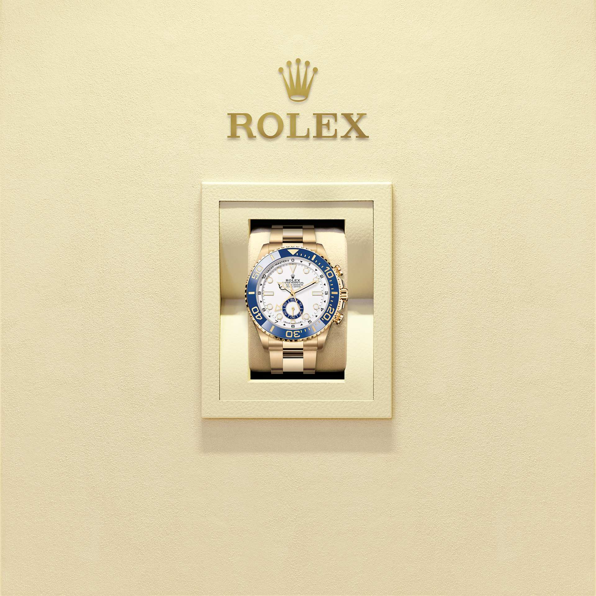
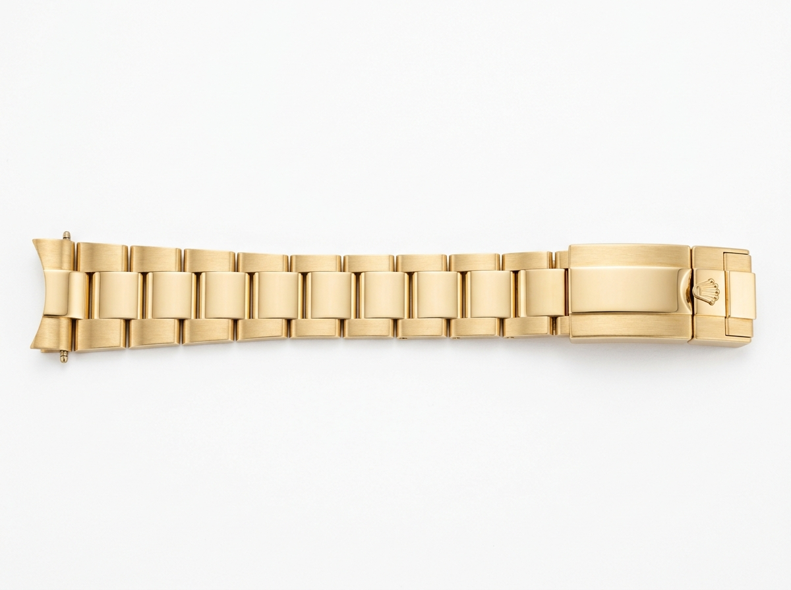

YACHT-MASTER II
Mastering
the start
The Oyster Perpetual Yacht-Master II in 18 ct yellow gold with an Oyster bracelet and a bidirectional rotatable bezel with a blue Cerachrom insert.
Reference 126688 · 44 mm

The Oyster Perpetual
44 mm · 18 ct yellow gold
Reference 126688
₹59,10,000
YACHT-MASTER II
The Oyster Perpetual Yacht-Master II in 18 ct yellow gold with an Oyster bracelet and a bidirectional rotatable bezel with a blue Cerachrom insert.
Reference 126688 · 44 mm


CERACHROM BEZEL INSERT
The Yacht-Master II features a bidirectional rotatable bezel fitted with a 60-minute graduated Cerachrom insert in blue ceramic. Extremely hard and virtually scratchproof, the high-technology ceramic used by Rolex requires special tools for its machining.
MANUFACTURE ROLEX
A self-winding mechanical regatta chronograph movement entirely developed and manufactured by Rolex. Over 35,000 hours of development culminated in this 360-component masterpiece, featuring the revolutionary traversing balance bridge and blue Parachrom hairspring.
Anchored firmly on both sides for maximum shock resistance. The patented paramagnetic blue Parachrom hairspring provides up to 10 times greater precision in the event of shocks.
Fixed securely at two points across the mainplate, ensuring absolute positional stability of the oscillating balance assembly even under intense sailing velocity.
Crafted in-house from an exclusive niobium-zirconium alloy. Insensitive to magnetic fields and resilient to thermal variations, featuring a Rolex overcoil for concentric breathing.
Patented high-efficiency spring shock absorbers engineered by Rolex, increasing movement shock tolerance by up to 50% to protect the delicate balance staff pivots.
Bidirectional self-winding via the Perpetual rotor ensures continuous power delivery for three days, operating within Superlative Chronometer parameters (−2/+2 sec/day).
Experience the Yacht-Master II mechanical memory and on-the-fly flyback synchronisation used by skippers at the official gun.

DIAL
Optimal legibility
The display ensures clear readability of the various functions. The dial is coated with a new white lacquer — matt, to reduce reflections — and carries the appliqué index hour markers emblematic of Professional category watches.
A programmable regatta countdown timer allows the crew to synchronise precisely with the official start sequence signal.
The inner flange carries a 10 to 0 minute countdown graduation, with half-minute triangular markers for refined timing accuracy.
MATERIAL
Commitment to excellence
By operating its own exclusive foundry, Rolex has the unrivalled ability to cast the highest quality 18 ct gold alloys. Only the finest pure metals are used — silver, copper, platinum and palladium — ensuring alloys of exceptional and consistent quality.
Every gold alloy is verified in Rolex's own in-house laboratory before being cast and shaped into the case, bezel and bracelet. Each component undergoes meticulous inspection — a commitment to excellence that defines every Rolex creation.
BRACELET
Alchemy of form and function
The Oyster bracelet is a perfect alchemy of form and function, aesthetics and technology, designed to be both robust and comfortable.
A secure folding clasp that prevents accidental opening — even under the most demanding maritime conditions.
Provides approximately 5 mm of length adjustment for enhanced comfort in varying temperatures and circumstances.

REFERENCE 126688
Prices are indicative and subject to change. Please contact an authorised dealer for current pricing and availability.
DETAILS
Blue Cerachrom Bezel
White Dial
YACHT-MASTER II
Discover the Oyster Perpetual Yacht-Master II.